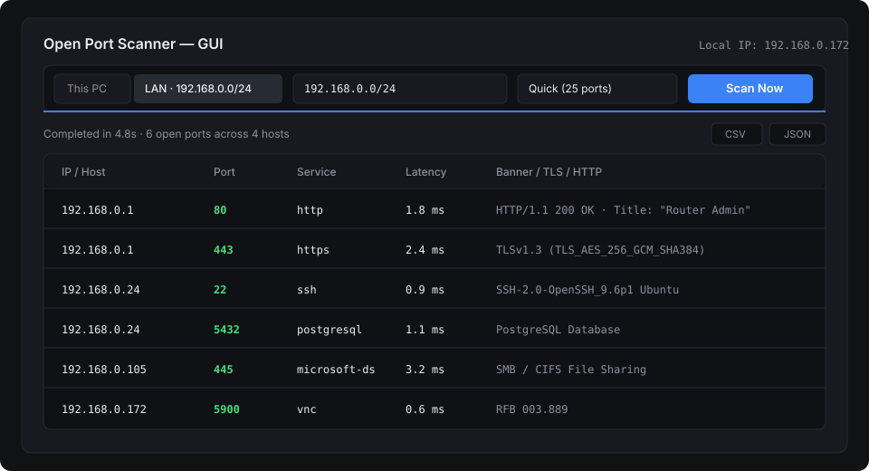

Lightweight Nmap alternative for fast port audits
Nmap is the undisputed industry standard for deep security assessments. However, for everyday port checks, quick LAN discovery, and environments without root permissions, a smaller, self-contained tool is often a better fit.
Download Open Port Scanner v2.0
Standalone binary (~2-4 MB) • Windows .exe • macOS • Linux

When Nmap is more than you need
Nmap is powerful because it constructs raw IP packets and operates at Layer 3/4. That depth comes with constraints:
- Kernel driver requirements: On Windows, Nmap requires installing Npcap or WinPcap, which requires administrative privileges and system reboots.
- Root privileges: SYN stealth scans (
-sS), OS fingerprinting (-O), and custom packets requiresudoor root access on Linux and macOS. - Dated graphical interface: Zenmap relies on legacy Python 2/3 GTK bindings that are cumbersome to install on modern macOS and Linux distributions.
- Large installation footprint: Nmap with its script databases and runtimes occupies 50-100+ MB on disk.
Direct comparison
| Criteria | Open Port Scanner | Nmap / Zenmap |
|---|---|---|
| Installation | Zero (portable single binary) | Installer + Npcap driver |
| Root / Admin Privileges | Not required (standard OS sockets) | Required for raw packet scans |
| Footprint | ~2.1 MB (.exe) / ~4.4 MB (macOS) | ~80 MB+ installed |
| Desktop GUI | GPU dark-mode interface included | Separate legacy Zenmap tool |
| 1-Click LAN Scan | Built-in subnet auto-detection | Manual CIDR notation required |
| Scripting Output | Clean JSON, CSV, Markdown | XML, Grepable, Normal formats |
| License | MIT (Free & Open Source) | NPSL (Custom restrictive license) |
Best use cases for each tool
Use Open Port Scanner when:
- You want to see which devices and services are active on your home or office Wi-Fi in 2-5 seconds.
- You are working on a locked-down workstation where installing kernel drivers is prohibited.
- You want to pipe clean JSON directly into modern automation scripts or export CSV for an audit log.
- You need a desktop interface on macOS (Apple Silicon or Intel) without configuring Python/GTK dependencies.
Use Nmap when:
- You are conducting formal penetration tests requiring raw SYN packet manipulation or evasion techniques.
- You need NSE (Nmap Scripting Engine) to run vulnerability scripts against target daemons.
- You need low-level OS kernel fingerprinting.
Quick command reference
# Equivalent of a fast top-ports LAN sweep:
# Nmap:
nmap -F --open 192.168.1.0/24
# Open Port Scanner (automatic subnet detection):
port-scanner --lan --profile quick
# Check common database and web ports on a target server:
port-scanner db.local -p 80,443,3306,5432,6379 -o report.json